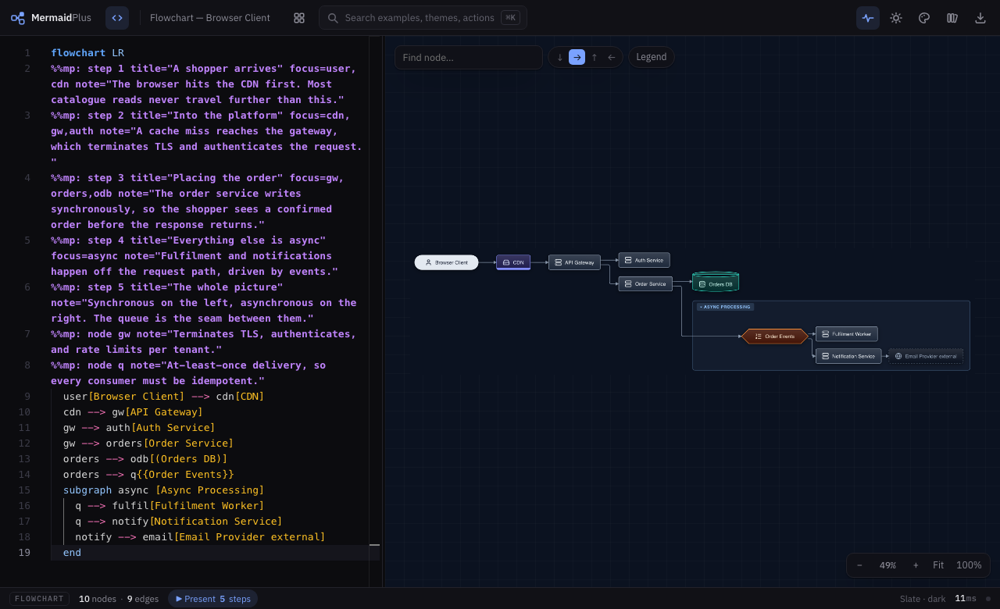
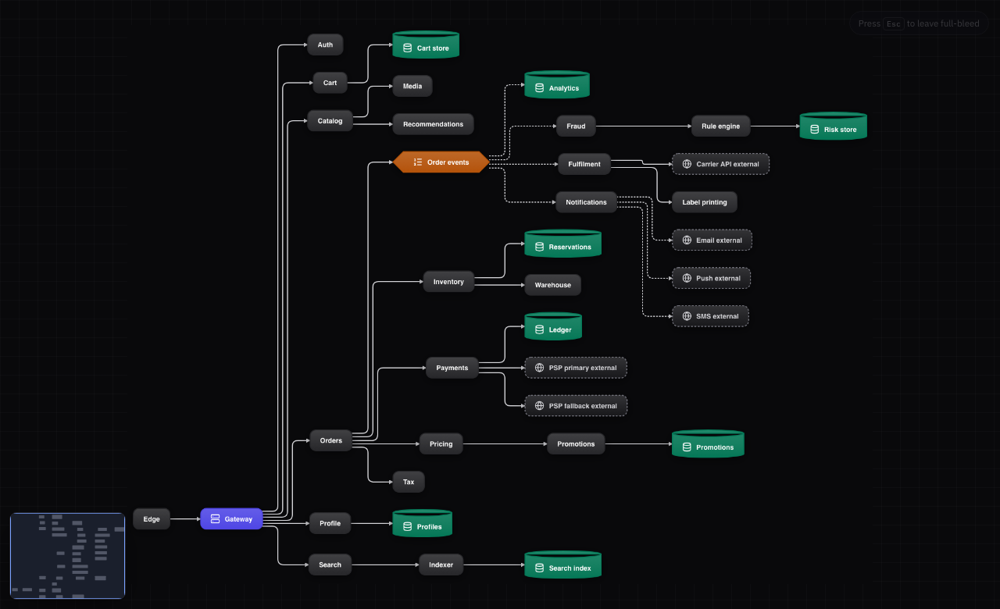

Chapter 5
Presenting
Nobody takes in a forty-node diagram cold. Number a few steps and it walks people through itself — in a design review, on a new joiner's second day, or on a call at 3am.
Write the steps
%%mp: step 1 title="A shopper arrives" focus=shopper,cdn note="Most catalogue reads never travel further than the edge." %%mp: step 2 title="Into the platform" focus=gw,orders note="The gateway authenticates and routes. Nothing else is public." %%mp: step 3 title="Money is held, not taken" focus=payments,psp %%mp: step 4 title="The whole picture"
Three things to know about focus:
- Naming a group names everything inside it.
- Naming nothing makes a title card over the whole diagram — a good way to open and to close.
- Steps run in numeric order, not the order you wrote them, so you can insert one later without renumbering.

Run it
Press ⌘K and choose Present walkthrough. The chrome clears automatically.
→ and ← move between steps. Or press play and it advances itself.
Esc ends it and brings everything back.
Deep-link into the middle of a story with ?step=3 — useful for pasting a specific moment into a ticket.
Full-bleed
Press F and every piece of interface gets out of the way: no toolbar, no editor, no status bar. Just the diagram, on a projector or a shared screen. Esc brings it back.

Motion that means something
A highlight travels the edges in dependency order — an edge lights as the one feeding it lands — so the picture moves the way a request does rather than shimmering at random. Selecting a node leaves only its neighbourhood moving.
| Directive | Effect |
|---|---|
layout flow=all | Every edge flows. The default |
layout flow=auto | Only broken lines — the ones already marked indirect |
layout flow=none | Still at rest; selecting still animates |
layout motion=off | This diagram never animates |
There is a motion toggle in the toolbar for all diagrams at once, and anyone whose system asks for reduced motion gets none of it — in the app and in exported pages.